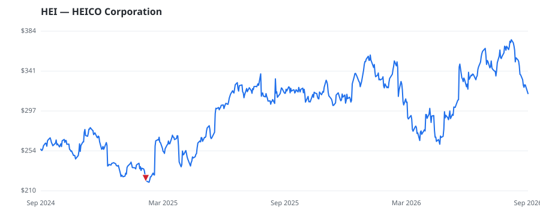

bullish · bearish · n/a — dots: price>SMA10 · SMA10>SMA50 · SMA50>SMA200 · up>down volume (20d)
Capital Goods · large cap

Heico is an aerospace and defense supplier that focuses on creating replacement parts for commercial aircraft and components for defense products. In commercial aerospace, Heico is the largest independent producer of replacement aircraft parts. In the defense market, the company produces niche subcomponents used in targeting technology as well as simulation equipment, among other categories. It operates two segments: the flight support group and the electronic technologies group. Both supply the aerospace and defense sectors to different degrees. Heico is persistently acquisitive, focusing on AIRCRAFT ENGINES & ENGINE PARTS · website
| Revenue | $4.5B | Net income | $745.6M |
|---|---|---|---|
| Operating income | $1.0B | Diluted EPS | $4.90 |
| Assets | $8.5B | Equity | $4.4B |
| Fund | Fund alpha vs SPY | Position | % of book |
|---|---|---|---|
| KP Management LLC | +7% | $12M | 2.5% |
Hedge data: SEC EDGAR 13F · ranked funds beat SPY in >50% of their quarters · fund alpha = mirror-portfolio return minus SPY.